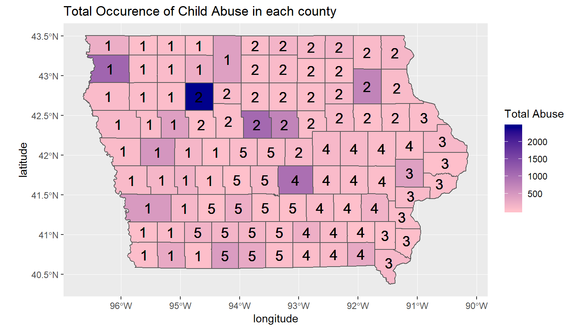

Child Abuse in Iowa: Stopping Tomorrow’s Abuser by Protecing Today’s Abusee
Group 4: Ratie Vushe and Jinghan Gao
Last updated on 2019-01-16
A Worldwide Problem

Religious News Service
Crime is constantly increasing and while child abuse might have drowned amongst other forms of crime, more than 3 million reports of child abuse are made in the United States per year. Most people believe that child abuse is as a result of action, such as physical, sexual abuse or exposure to dangerous substances; but inaction in the form of denial of critical care or negligence can also cause immense harm to children people often overlook this. Without paying enough attention and consideration to our future generation, the consequence could be drastically adverse, varying from Intergenerational transmission of abuse to suicidal behavior. The most effective way to curb future child abuse is to protect today’s children because a third of victims of child abuse become abusers themselves afterwards. Using population and child abuse data we perform analysis into child abuse in Iowa and recommend policy changes to improve the situation.
Background information
The dataset, from Waggle, summarizes the occurrences of different types of child abuse in the counties of Iowa from 2004 to 2017. Data is grouped by calendar year, county and type of abuse. Iowa is divided into several DHS Service areas(federal agencies designed to protect the respective counties against threats).
Most Common Abuse Type
We did some data wrangling to find the most occurring type of abuse in each county and to our surprise Denial of Critical Care was the most popular across all counties, having significant intensity in each service area.| Year | FIPS.County.Code | County.Name | DHS.Service.Area | Judicial.District | Abuse.Type | Occurences | delete | latitude | longitude | delete2 | US.Counties | Iowa.Watersheds..HUC.10. | Iowa.Watershed.Sub.Basins..HUC.08. | Iowa.ZIP.Code.Tabulation.Areas | Service.Area |
|---|---|---|---|---|---|---|---|---|---|---|---|---|---|---|---|
| 2017 | 19177 | Van Buren | 4-Cedar Rapids | 8-Eigth JD | Denial of Critical Care (Neglect) | 18 | 40.75323 | -91.94999 | 1885 | 368 | 30 | 798 | 4 | ||
| 2017 | 19035 | Cherokee | 1-Western | 3-Third JD | Denial of Critical Care (Neglect) | 34 | 42.73562 | -95.62381 | 181 | 429 | 37 | 286 | 1 | ||
| 2017 | 19145 | Page | 1-Western | 4-FourthJD | Denial of Critical Care (Neglect) | 79 | 40.73914 | -95.15017 | 1837 | 463 | 46 | 598 | 1 | ||
| 2017 | 19089 | Howard | 2-Northern | 1-First JD | Denial of Critical Care (Neglect) | 56 | 43.35677 | -92.31720 | 1788 | 13 | 6 | 429 | 2 | ||
| 2017 | 19077 | Guthrie | 1-Western | 5-FifthJD | Denial of Critical Care (Neglect) | 38 | 41.68375 | -94.50105 | 1784 | 336 | 28 | 310 | 1 | ||
| 2017 | 19079 | Hamilton | 2-Northern | 2-Second JD | Denial of Critical Care (Neglect) | 37 | 42.38377 | -93.70681 | 281 | 122 | 11 | 782 | 2 | ||
| 2017 | 19025 | Calhoun | 2-Northern | 2-Second JD | Denial of Critical Care (Neglect) | 25 | 42.38518 | -94.64041 | 1371 | 326 | 27 | 121 | 2 | ||
| 2017 | 19161 | Sac | 1-Western | 2-Second JD | Denial of Critical Care (Neglect) | 41 | 42.38626 | -95.10539 | 1880 | 324 | 27 | 97 | 1 | ||
| 2017 | 19101 | Jefferson | 4-Cedar Rapids | 8-Eigth JD | Denial of Critical Care (Neglect) | 109 | 41.03176 | -91.94888 | 285 | 147 | 13 | 326 | 4 | ||
| 2017 | 19143 | Osceola | 1-Western | 3-Third JD | Denial of Critical Care (Neglect) | 24 | 43.37857 | -95.62369 | 1836 | 421 | 37 | 597 | 1 |
Intensity of Child abuse in Iowa
We first looked at the total number of child abuse that occurred in each county in 2017. By using a static map we created a display of the degree of child abuse; with the darkest shades representing by the most reports of child abuse and the light areas representing otherwise. We further divided up the counties into service areas denoted by numbers 1, 2, 3, 4, 5 on map. There are ninety nine counties in Iowa, meaning that in average, 19.8 counties share the same service area. On the map, many of the darker counties are under Service Area 2, which indicates there are high rates of abuse in the Northern County. This may be a result of poor service quality in this region of Iowa. Generally speaking, we can arrange the service areas by quality to obtain: 2 < 1 < 4 < 5 < 3 (with 2 providing the least quality and 3 having the highest quality)
